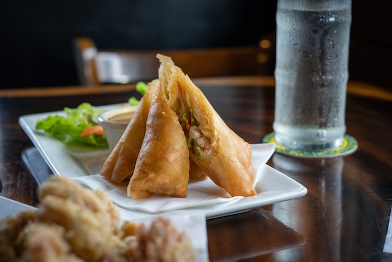

Spring roll

Description.
Spring rolls are rolled appetizers or dim sum commonly found in Chinese and other Southeast Asian cuisines. The kind of wrapper, fillings, and cooking technique used, as well as the name, vary considerably within this large area, depending on the region's culture.
They are filled with vegetables and other ingredients.
Ingredients:
- 1 cup Chicken mince
- 12 Spring roll wrappers
- 2 tbsp Oil + for deep-frying
- 1 tbsp Garlic chopped
- 1 tbsp Ginger chopped
- ½ cup Cabbage shredded
- ½ cup Carrots, cut into juliennes
- 1 tsp Soy sauce
- Salt to taste
- 1 tspCrushed black peppercorns
- 1-2 Spring onion greens, chopped
- ½ tsp Rice vinegar or plain vinegar
- ½ tsp Crushed red chillies
- Paste of flour and water to seal the rolls
Steps:
- Heat oil in a non-stick pan. Add garlic and ginger and sauté well. Add cabbage and carrot and toss on high heat.
- Add chicken mince, soy sauce, salt, crushed peppercorns, chilies and mix well. Cook on high heat for 2-3 minutes.
- Add ¾ of the spring onions, switch off heat and mix well. Transfer onto a plate and let the mixture cool.
- Place the spring roll sheets on a flat surface. Put spoonful of the cooked mixture on one side of each sheet and roll along with folding the edges. Apply the prepared paste on the edges and seal tightly.
- Heat sufficient oil in a pan. Deep-fry the rolls till golden. Drain on absorbent paper.
- Serve hot.